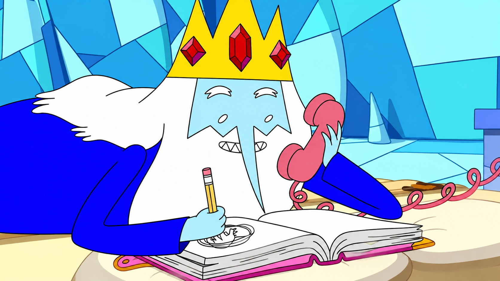

Sobre el Rey Helado
El Rey Helado es uno de los personajes más complejos y conmovedores de Hora de Aventura. Durante gran parte de la serie aparece como un excéntrico y solitario hechicero del hielo obsesionado con secuestrar princesas, pero con el tiempo se descubre que su locura y sus poderes provienen de la corona mágica que lleva puesta. Su verdadera identidad es la de Simón Petrikov, un amable investigador de la época previa a la Guerra de los Champiñones que sacrificó su cordura para proteger a una pequeña Marceline en un mundo post-apocalíptico, dejando una historia marcada por la tragedia, el afecto y el deseo de volver a ser él mismo.